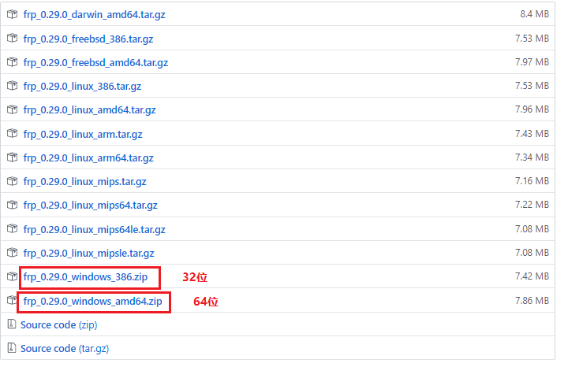
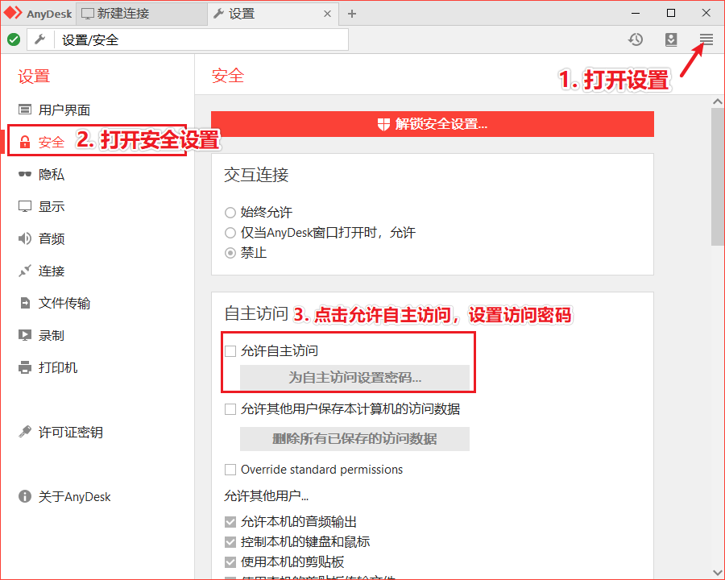
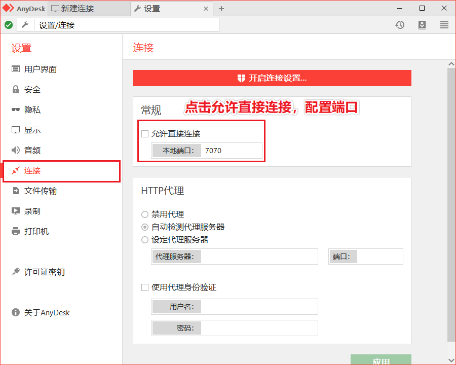
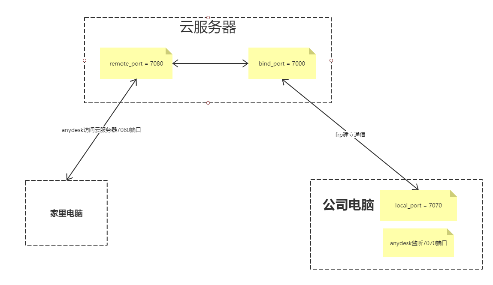

服务器frps
cd /usr/local进入/usr/local目录wget https://github.com/fatedier/frp/releases/download/v0.29.0/frp_0.29.0_linux_amd64.tar.gz下载frp服务器压缩包tar xzvf frp_0.29.0_linux_amd64.tar.gz解压压缩包cd frp_0.29.0_linux_amd64进入frp目录，当前目录为/usr/local/frp_0.29.0_linux_amd64
配置frps.ini
1
2
3
4# frps.ini
[common]
bind_port = 7000
#token = sDesQJk@KlO #客户端连接服务器端的口令，设置了之后验证失败，所以暂时取消验证设置开机启动
vi /etc/systemd/system/frps.service新建此文件，并写入以下内容1
2
3
4
5
6
7
8
9
10
11[Unit]
Description=frps daemon
[Service]
Type=simple
启动服务的命令（此处写你的frps的实际安装目录）
ExecStart=/usr/local/frp_0.29.0_linux_amd64/frps -c /usr/local/frp_0.29.0_linux_amd64/frps.ini
[Install]
WantedBy=multi-user.targetsudo systemctl start frps启动frpssudo systemctl enable frps自启动1
2
3
4其他相关命令
sudo systemctl restart frps #重启
sudo systemctl stop frps #停止
sudo systemctl status frps #查看应用日志
iptables开放端口
如果未设置防火墙限制端口访问，该步骤省略1
2
3
4frp服务器，有多少需要开放的端口就添加多少条并替换其中的端口号
-A INPUT -p tcp -m state --state NEW -m tcp --dport 7000 -j ACCEPT
-A INPUT -p tcp -m state --state NEW -m tcp --dport 7070 -j ACCEPT
-A INPUT -p tcp -m state --state NEW -m tcp --dport 7080 -j ACCEPT
受控客户端
安装anydesk
下载frp客户端
我是windows端的，下载后，解压压缩包。
配置frpc.ini
1
2
3
4
5
6
7
8
9
10[common]
server_addr = x.x.x.x #服务器地址
server_port = 7000 #服务器端口
token = sDesQJk@KlO #连接服务端口令,设置了之后验证失败，所以暂时取消验证
[ssh]
type = tcp
local_ip = 127.0.0.1
local_port = 7070 #要穿透的本地端口
remote_port = 7080 #服务器暴露到外网的端口，同时服务器需要开放该端口启动frpc
- 在当前目录下打开cmd命令行工具
- 执行
./frpc -c ./frpc.ini命令，否则要配置path环境变量（注意此处windows必须加上./否则无法运行）
- 配置自主访问密码
- 允许直接连接，并保证端口与
frpc.ini内本地端口配置一致
控制客户端
网络拓扑

网络拓扑理解如下，受控客户端的AnyDesk服务在本地监听7070端口，frp服务将其映射到云服务器的7080端口。控制客户端连接云服务器的7080端口，就会被frp转发到受控客户端的7070端口，此时受控客户端的AnyDesk收到连接请求，就这样实现远程桌面内网的穿透。
借鉴网址
AnyDesk with Frp 突破内网的远程桌面
frp实现内网穿透并配置自动启动
frp怎样开机启动和后台运行? => piiiiiiiiiiiiiii回答